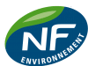
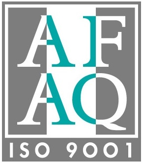
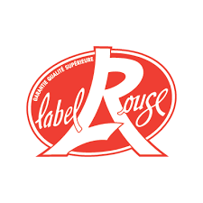
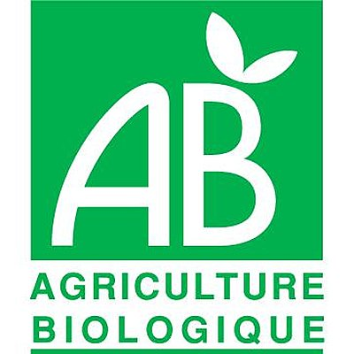
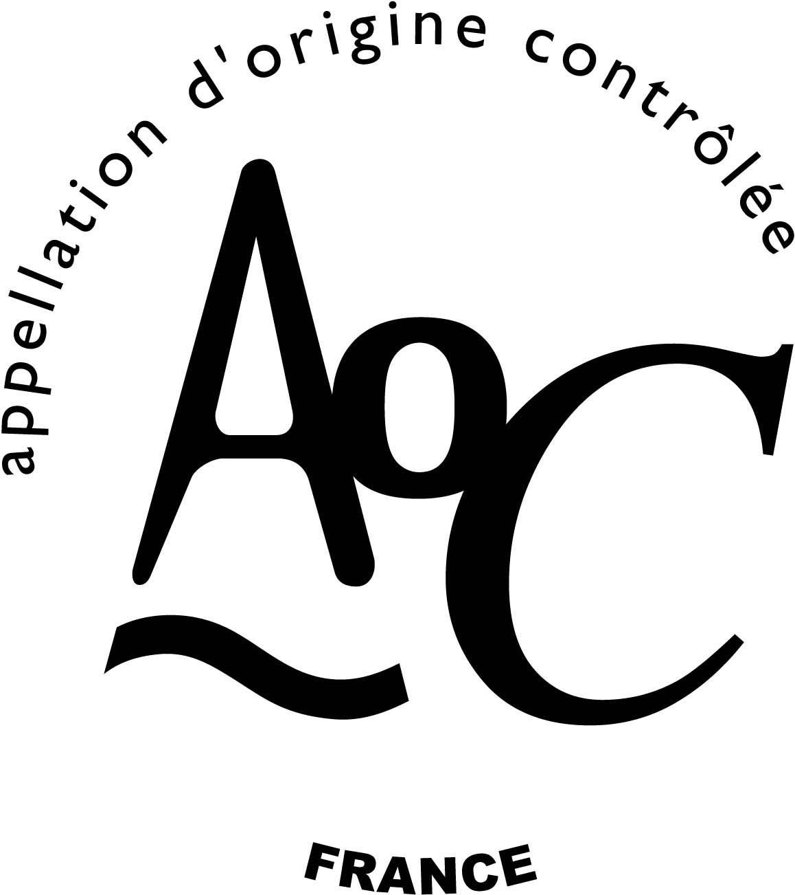

Produit et Qualité
Les normes :
Elles permettent de garantir certaines caractéristiques des produits et services, notamment la qualité, le respect de l'environnement, la sécurité, la fiabilité, l'efficacité...
L'Association Française de NORmalisation (AFNOR) est l'organisme officiel français de Normalisation. Il est membre de l'Organisation Internationale de normalisation (ISO : ONG et réseau d'instituts nationaux de normalisation de 163 pays dont le secrétariat central, situé en Suisse, à Genève, aussre la coordination et l'unification internationales des normes industrielles).
L'exploitation de la marque NF (propriété AFNOR) est confié à AFAQ AFNOR Certification (filiale du groupe AFNOR). Il existe différents logos :
| NF Norme Française (Produits industriels et de consommation) |
|
|  | NF environnement (Produits écologiques) |
| NF services (Services) |
Tout comme la marque NF, la marque AFAQ est aujourd'hui gérée par la Société AFAQ AFNOR Certification. Elle est utilisée dans le cadre des activités d'évaluation et de certification dans le domaine des systèmes de management et de gouvernance des entreprises et organismes. On distingue entre autres les normes ISO 9001 qui traite du Management de la qualité et ISO 14001 qui traite du Management environnemental.
Les Signes d'Identification de la Qualité et de l'Origine (SIQO) :
L'Institut national de l'origine et de la qualité (établissement public administratif français placé sous la tutelle du Ministère de l'Agriculture) accompagne les producteurs qui s'engagent dans les démarches de qualité et gère plus globalement les Signes d'Identification de la Qualité et de l'Origine, qui sont les labels officiels français : Label Rouge, Agriculture Biologique, AOC... Ils garantissent que les produits ou les services répondent à des caractéristiques particulières et contrôlées :
Le Label Rouge atteste que l'aliment possède un ensemble de qualités et de caractéristiques très spécifiques (conditions de production et de goût), qui lui confèrent une qualité supérieure à son équivalent sur le marché (exemples de produits : volailles, charcuteries, produits laitiers, saumon fumé, sel de Guérande...) ;
Ce label indique qu'au moins 95% des ingrédients sont issus de l'agriculture biologique, c'est-à-dire qu'ils ont bénéficié de pratiques spécifiques de production (emploi d'engrais verts, lutte naturelle contre les parasites ; exemples de produits : viandes, produits laitiers, miel...)
Une Appellation d'Origine Contrôlée (AOC) garantit un produit originaire d'un pays, d'une région ou d'un terroir et dont la qualité ou les caractéristiques sont dues à son milieu géographique (climat, savoir-faire... Exemples de produits : vins, produits laitiers, fruits, légumes...).
Depuis l'apparition des sigles européens, les AOC françaises doivent obligatoirement appartenir à :
- une AOP (Appellation d'Origine Protégée), équivalent européen de l'AOC, qui désigne un produit dont la production, la transformation et l'élaboration ont lieu dans une zone géographiquement déterminée, selon un savoir-faire reconnu (France : fromage de Roquefort ; Italie : jambon de Parme ; Grèce : olive de Kalamata, feta ; Espagne : turron de Alicante...) ;
- une IGP (Indication Géographique Protégée), qui indique que le produit vient d'un lieu déterminé. Par rapport à une AOP, le lien entre la typicité du produit et son origine n'est que partiel (jambon de Bayonne, haricots tarbais...) ;
- une STG (Spécialité Traditionnelle Garantie), qui a pour objet de mettre en valeur un mode de production traditionnel, peu importe le lieu de fabrication (Belgique : les bières traditionnelles ; Italie : mozzarella ; Espagne : jambon Serrano...),
attestant la qualité liée à l'origine ou à la tradition.